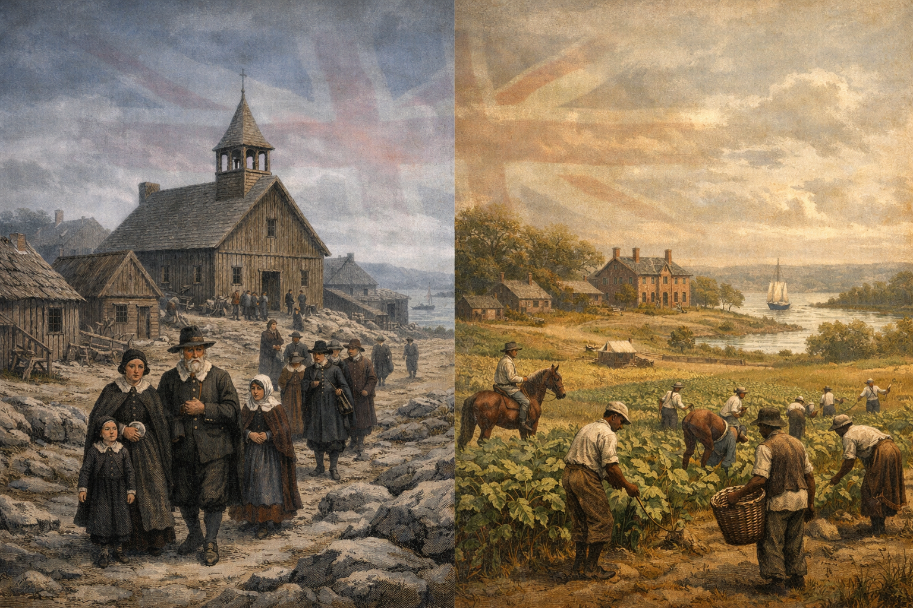
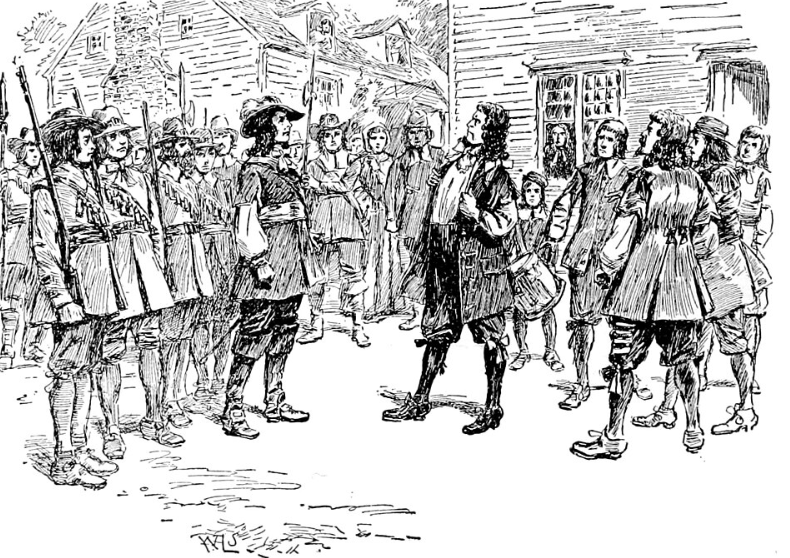
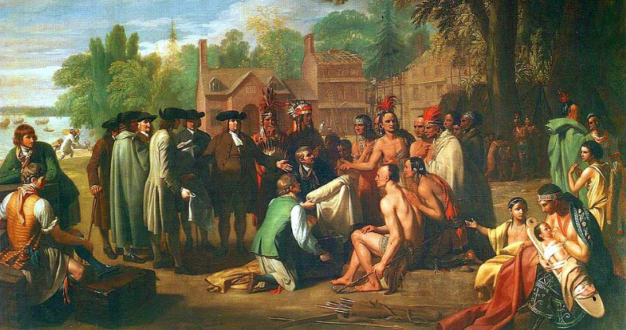
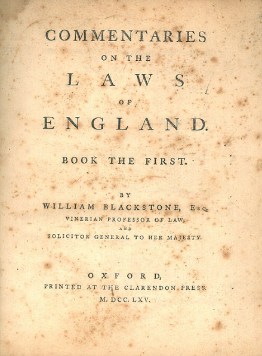
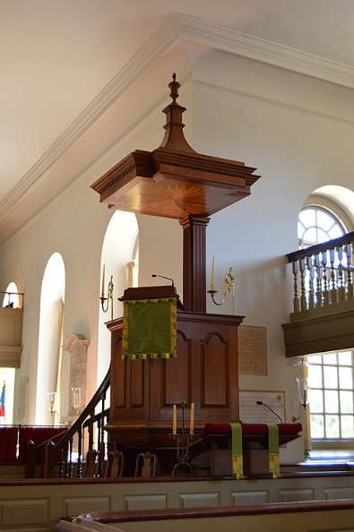
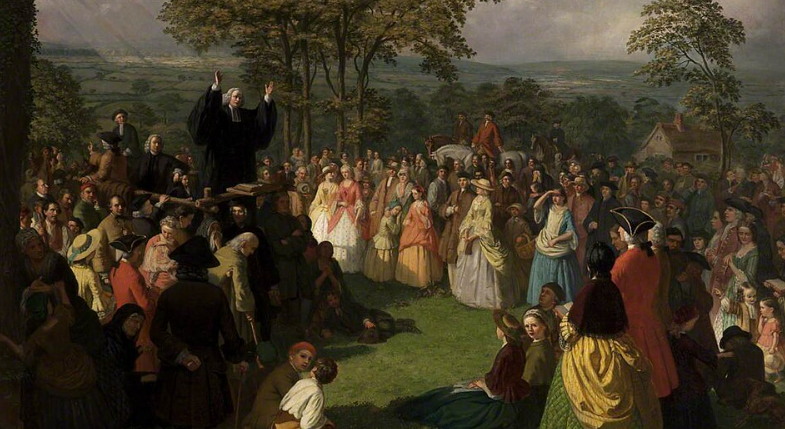
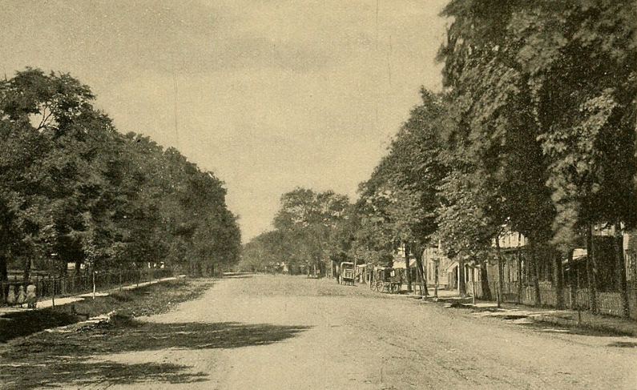
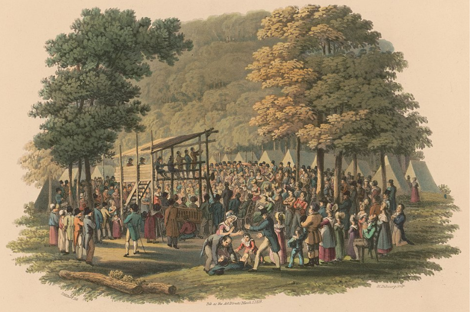
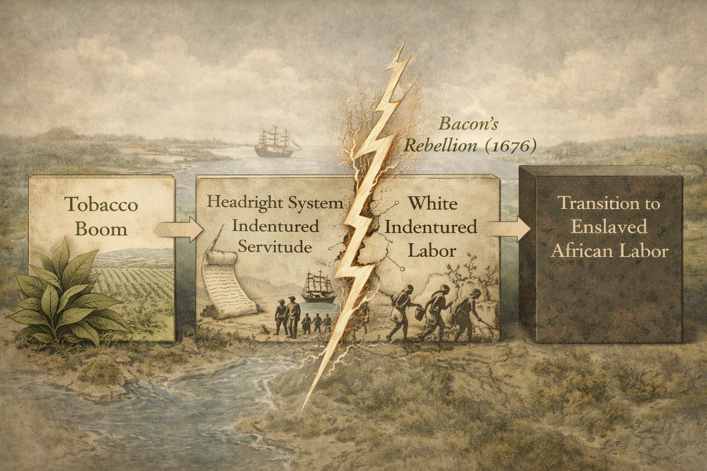

COLONIAL ORIGINS | SURVIVAL, TRADE, & FAITH
How did the struggle for survival and the embrace of British culture paradoxically plant the seeds of a distinct American identity?
Core Objectives
- Contrast the economic motives and hierarchical structure of the Chesapeake colonies with the religious mission and communal structure of New England.
- Analyze how Bacon’s Rebellion and King Philip’s War solidified the transition to racial slavery and colonial independence.
- Define "Anglicization" and explain how the Consumer Revolution created a shared British identity among the colonists.
- Evaluate the political impact of the First Great Awakening in challenging traditional authority and fostering individualism.
- Explain how religious diversity in the Middle Colonies and the practical need for trade led to the rise of religious toleration.
Key Terms
Joint-Stock Company | House of Burgesses | Puritans | "City upon a Hill" | Headright System | Indentured Servants | Bacon’s Rebellion | King Philip’s War | Anglicization | Consumer Revolution | Common Law | First Great Awakening | Itinerant Preachers | New Lights vs. Old Lights | Religious Pluralism
Introduction | The Paradox of Identity
In the mid-eighteenth century, the concept of a unified "American" identity was an illusion. A traveler journeying from the rocky coast of Massachusetts to the humid tidewater of Virginia would have encountered societies that differed as radically as two separate European nations. They held different values, practiced different forms of labor, organized their families differently, and worshipped God in different ways. Yet, by 1763, these distinct societies were beginning to converge. They were drawn together not by an internal desire for unity, but by two external forces: a cultural desire to emulate the British Empire (Anglicization) and a religious explosion that traversed colonial boundaries (the Great Awakening). This section analyzes the deep regional divisions of the early colonies and the forces that paradoxically created a shared culture just in time for the Revolution.

The early American colonies were established as fundamentally distinct societies, separated by geography, economic motives, and religious beliefs, before eventually converging through shared cultural and spiritual movements.
Analysis Question: How might the extreme geographic and economic differences between the northern and southern colonies complicate the formation of a unified national identity?
Diverse Settlements | Jamestown and New England
To comprehend the fragility of the early American union, one must recognize that the North and South were founded as diametrically opposed social experiments born of desperate struggle. In the Chesapeake, a fragile commercial venture transformed into a rigid, profit-driven hierarchy sustained by cash crops, widespread land grants, and an initially white, bound labor force. Conversely, New England’s early settlers pursued a theological safe harbor, constructing a communal, egalitarian society anchored by a shared covenant and broad political participation among church members. Lying between these polarities were the Middle Colonies, a cosmopolitan region that foreshadowed the pluralism of the future republic by demonstrating that commercial prosperity could thrive alongside religious toleration and ethnic diversity.
The Chesapeake | Profit, Hierarchy, and Survival
The settlement of Jamestown in 1607 was a business venture that nearly ended in a graveyard. Funded by the Virginia Company, a joint-stock company, the colony was designed to return a profit to shareholders in London. The initial settlers were not seeking religious freedom or a new model of society; they were seeking gold, and later, a passage to the Indies. This singular focus on profit blinded them to the realities of survival.

Nathaniel Bacon and his armed followers confront Governor William Berkeley in Jamestown.
Why it Matters: Bacon's Rebellion exposed the deep class tensions between wealthy planters and poor, landless whites in the Chesapeake. The uprising terrified the colonial elite and accelerated the transition from relying on white indentured servitude to enforcing a permanent system of racial slavery to control the labor force.
Spotlight Question: How did the social and economic inequalities that fueled Bacon's Rebellion lead to the expansion of racial slavery in the Chesapeake?
The early years were defined by catastrophic suffering. The site chosen for Jamestown was a malarial swamp, selected for defense against Spanish ships rather than for human health. The water was brackish and contaminated, leading to outbreaks of dysentery and typhoid fever. Compounding the environmental hazards was the composition of the settlers themselves: a disproportionate number were "gentlemen" who considered manual labor beneath their station. They refused to plant crops, preferring to search for nonexistent gold while their food stocks dwindled.
The winter of 1609–1610, known as the "Starving Time," brought the colony to the brink of extinction. Of the 400 settlers in Virginia, only 60 survived. Desperation drove the starving colonists to eat horses, rats, leather boots, and, in at least one documented instance, the corpse of a neighbor. Survival was only secured through the imposition of martial law by Captain John Smith—who famously declared, "He that will not work shall not eat"—and the eventual discovery of a cash crop.
The cultivation of tobacco saved the colony but dictated the social structure of the Chesapeake (Virginia and Maryland). Tobacco was a labor-intensive crop that required vast amounts of land and a large, disposable workforce. To attract labor, Virginia employed the headright system, granting 50 acres of land to anyone who paid for their own passage or the passage of another. This system allowed wealthy planters to amass huge estates by importing indentured servants—poor English men and women who traded 5 to 7 years of labor for passage to the New World.
This created a volatile, polarized society. At the top stood a small elite of gentry planters who controlled the land and the politics. Below them was a restless population of freed indentured servants who found themselves pushed to the dangerous frontier, unable to acquire good land. This tension exploded in 1676 with Bacon’s Rebellion, when Nathaniel Bacon led an army of poor whites and blacks against Governor William Berkeley. Although the rebellion was crushed, it terrified the ruling elite. To prevent future class warfare, planters turned away from unpredictable white indentured servants and toward a more permanent, controllable labor force: enslaved Africans. Thus, the freedom of poor whites in the South was purchased, in part, with the enslavement of blacks.
Governance in this profit-driven world reflected its hierarchical nature. In 1619, the Virginia Company established the House of Burgesses, the first representative assembly in the Western Hemisphere. While often celebrated as the birth of American democracy, the House of Burgesses was fundamentally an aristocratic body. Only property owners could vote, and the assembly largely protected the interests of the tobacco planters. Liberty, in the Chesapeake view, was a privilege of status—the power of the independent gentleman to rule his domain without interference.
Checkpoint
1. What was the primary motivation for the founders of the Jamestown colony?
New England | Covenant and Community
A thousand miles to the north, the Puritans of Massachusetts Bay established a society based on an entirely different premise, though they too faced a harrowing beginning. Fleeing what they viewed as the corruption of the Church of England, they did not seek profit, but a theological safe harbor. Their leader, John Winthrop, famously declared on the deck of the Arbella that their colony would be a "City upon a Hill"—a model Christian community that the world would watch. If they adhered to God’s laws, they would prosper; if they failed, they would face divine wrath.

The Old Ship Church in Hingham, Massachusetts, built in 1681, served as a meetinghouse for both religious worship and town government.
Why it Matters: The physical structure of the meetinghouse reflects the deeply intertwined nature of faith and civic life in early New England. It served as the center for both communal worship and the broad political participation that characterized Puritan towns.
Spotlight Question: In what ways did the architectural centrality of the meetinghouse reflect the theological and political priorities of Puritan society?
However, the "City upon a Hill" was built on frozen ground. When the Winthrop fleet arrived in 1630, they found the remnants of the earlier Salem settlement in a state of destitution. The first winter tested the Puritans' resolve as severely as the "Starving Time" had tested Jamestown. Lacking adequate shelter against the biting New England cold, and with provisions running low, disease swept through the camp. Approximately 200 settlers died, and another 200 returned to England when the ships sailed back in the spring. Unlike the Jamestown settlers, however, the Puritans interpreted these hardships through a theological lens. They viewed their suffering not as bad luck, but as a divine test of their covenant. This shared tribulation forged an intense social cohesion.
This "covenant" theology created a society that was communal, compact, and egalitarian—at least for church members. Unlike the spread-out plantations of Virginia, New Englanders lived in tight-knit towns centered around the meetinghouse. They arrived not as isolated young men seeking fortune, but as families. This demographic difference created a stable, self-reproducing population with a mixed economy of farming, fishing, and timber.
Political power in New England was rooted in the Town Meeting, where adult male church members met to directly manage local affairs. While the Puritans were not democrats in the modern sense—they believed in submission to authority—their system created a broad political participation unknown in the South or even in England. However, this unity came at a cost: conformity. Dissenters were viewed as a spiritual cancer. Roger Williams, who argued for a complete separation of church and state and fair dealings with Native Americans, was banished in 1636; he went south to found Rhode Island as a haven for religious liberty. Anne Hutchinson, a brilliant woman who challenged the authority of the ministers by claiming she received direct revelations from God, was tried and exiled in 1638.
The Puritan mission also faced external threats. As the population expanded, conflict with Native Americans became inevitable. This culminated in King Philip’s War (1675–1676), a brutal conflict between a confederation of indigenous tribes led by Metacom (King Philip) and the New England colonists. It was, proportional to population, the bloodiest war in American history. The victory of the colonists broke the power of the coastal tribes but also left the New Englanders independent, militarized, and increasingly convinced of their own divine favor.
Checkpoint
1. Why was the "City upon a Hill" concept significant to the Puritan mission?
The Middle Colonies | A Model of Diversity
Between the rigorous theology of New England and the plantation hierarchy of the Chesapeake lay the Middle Colonies (New York, New Jersey, and Pennsylvania). Often overlooked, this region was the true prototype of the future United States. It was the most ethnically and religiously diverse region in English America.

William Penn forms a treaty of friendship with the Lenni Lenape under an elm tree at Shackamaxon.
Why it Matters: Pennsylvania was founded as a "Holy Experiment" that explicitly emphasized pacifism, religious toleration, and fair dealings with Native Americans. This foundational commitment to coexistence attracted a diverse array of immigrants and established a pluralistic society.
Spotlight Question: Why was William Penn's approach to diplomacy with Indigenous tribes significant for the early development and demographic growth of the Middle Colonies?
New York, originally the Dutch colony of New Netherlands, was a commercial hub focused on the fur trade and shipping. Even after the English seized it in 1664, it retained a cosmopolitan character, home to Dutch, French, Swedes, and Jews.
Pennsylvania, founded by William Penn in 1681, was a radical experiment in pacifism and coexistence. A Quaker, Penn envisioned his colony as a "Holy Experiment" where native rights would be respected and religious freedom would be guaranteed to all monotheists. The Quakers rejected paid clergy, refused to swear oaths, and believed in the "Inner Light" present in all people—including women and Native Americans. This atmosphere of tolerance, combined with rich soil, attracted a flood of non-English immigrants, particularly Germans (the "Pennsylvania Dutch") and Scots-Irish. By the mid-18th century, the Middle Colonies demonstrated that a society could flourish without a single established church or a homogenous population, foreshadowing the pluralism of the future republic.
Checkpoint
1. Which characteristic best describes the Middle Colonies compared to other regions?
Anglicization
Paradoxically, as the raw frontier settlements matured into populous colonies, they did not diverge from Great Britain; rather, they integrated deeply into its cultural and economic orbit through a process known as Anglicization. Propelled by a transatlantic consumer revolution, colonists forged a shared material culture—purchasing identical imported textiles and ceramics—that signaled their civility and unified them under a British identity. This emulation thoroughly permeated colonial legal and political structures, as colonial assemblies aggressively asserted parliamentary rights and embraced English Common Law as their fundamental birthright. Consequently, the irony of the pre-Revolutionary era is that the colonists felt most authentically "American" when they were asserting their traditional rights as "Britons".
The Consumer Revolution
The primary engine of Anglicization was trade. In the early 1700s, a "consumer revolution" swept the Atlantic world. British manufacturing boomed, flooding the colonies with affordable goods: ceramic tea sets, fashionable textiles, mirrors, books, and furniture. Previously, a farmer in Pennsylvania made his own furniture and wore homespun clothes. Now, he drank tea from a Staffordshire cup and read The Spectator, a London periodical.
An imported British Staffordshire ceramic tea set commonly used in the American colonies during the eighteenth century.
Why it Matters: The influx of affordable British manufactured goods allowed colonists from varying regions to participate in a shared material culture. Purchasing and using these items signaled civility and fostered a unified British identity across geographically separated colonial societies.
Spotlight Question: How did the widespread consumption of British manufactured goods alter the colonists' sense of political and cultural identity?
This shared material culture served as a powerful bonding agent. A merchant in Boston, a planter in Charleston, and a lawyer in Philadelphia were all wearing the same English woolens and drinking tea—a ritual that signaled their civility and British identity. They were participating in a glorious empire of commerce. The irony of the pre-Revolutionary era is that the colonists felt most "American" when they were asserting their rights as "Britons."
Checkpoint
1. How did the "Consumer Revolution" contribute to the process of Anglicization?
Legal and Political Integration
Anglicization extended to the law. As colonial economies grew complex, local ad-hoc legal systems were replaced by the formal structures of English Common Law. Colonists began to view the common law—with its protections of property, trial by jury, and due process—not just as a legal system, but as their birthright. William Blackstone’s Commentaries on the Laws of England became the bible of American lawyers, teaching them that liberty was embedded in the English constitution.

A colonial-era printing of William Blackstone’s Commentaries on the Laws of England.
Why it Matters: Blackstone's foundational text standardized the colonists' understanding of English Common Law and its inherent protections of property and due process. By studying these legal traditions, colonial elites learned to assert their political rights not as rebellious subjects, but as the true heirs of English liberty.
Spotlight Question: How did the adoption of English Common Law shape the political arguments used by colonial assemblies when asserting their rights?
Politically, colonial elites modeled their behavior on the English gentry. Colonial assemblies (like the House of Burgesses or the Massachusetts General Court) began to view themselves as mini-Parliaments. They aggressively asserted the "power of the purse"—the right to control taxation and expenditures—just as the House of Commons did in London. This emulation set a dangerous trap: when the British Parliament later tried to assert absolute authority over the colonies, American elites resisted not because they wanted to be independent, but because they believed they were the true guardians of the English political tradition.
Checkpoint
1. Why did colonial assemblies begin to assert the "power of the purse"?
The Colonial Landscape Before the Awakening
By the early 1700s, the fervent piety that had driven the initial Puritan settlement of New England was fading. As the colonies prospered economically under the British policy of Salutary Neglect—which allowed the colonies significant political autonomy and economic freedom—material concerns often overtook spiritual ones.

The formal, structured interior of Bruton Parish Church in Williamsburg, Virginia.
Why it Matters: The established Anglican churches of the early eighteenth century often emphasized rational, written sermons and rigid social hierarchy. This formal approach to religion created a sense of spiritual coldness that left many colonists seeking a more emotionally resonant faith.
Spotlight Question: How did the formal religious practices of the established churches contribute to the declining religious fervor observed in the early 1700s?
In New England, church membership was declining. The strict requirements for "visible sainthood" (publicly recounting a conversion experience) excluded many second and third-generation colonists. In the South, the Anglican Church (Church of England) was the established authority, but it was often viewed as distant, formal, and lacking in emotional resonance. Ministers relied on written sermons that appealed to reason rather than the heart, reflecting the influence of the European Enlightenment. However, a spiritual hunger remained. By the 1730s, a reaction against this “spiritual coldness” began to stir in local communities, building into a powerful wave of revival that would sweep across the Atlantic world.
Checkpoint
1. How did the policy of "Salutary Neglect" affect the American colonies?
The First Great Awakening
While transatlantic commerce united the colonies materially, a profound religious explosion unified them spiritually. In reaction to the spiritual coldness and intellectualism of the early eighteenth century, the First Great Awakening swept across colonial boundaries, emphasizing visceral emotional worship and immediate, individual salvation. Ignited by brilliant theologians and spread by charismatic itinerant preachers who spoke to vast crowds, this movement democratized faith and fundamentally fractured traditional ecclesiastical hierarchies. Ultimately, by empowering colonists to judge their ministers and trust their own consciences, the Awakening instilled a pervasive habit of dissent that would crucially shape the American political landscape.
The Fire Starters | Edwards and Whitefield
The Awakening was not a coordinated institutional movement but a series of revivals that swept through the colonies between the 1730s and 1740s. It was characterized by a focus on individual salvation, immediate conversion, and emotional worship.

An eighteenth-century engraving of the itinerant minister George Whitefield delivering a sermon to a large outdoor gathering.
Why it Matters: Whitefield's use of open-air preaching and charismatic delivery bypassed traditional church structures and reached thousands of ordinary colonists at once. His highly emotional style sparked the massive religious revivals of the Great Awakening across the eastern seaboard.
Spotlight Question: How did the innovative methods of itinerant preachers fundamentally alter the way colonists engaged with religious authority and worship?
In Northampton, Massachusetts, the Congregationalist minister Jonathan Edwards ignited the revival. Edwards was a brilliant theologian who believed that religion had become too intellectual and stripped of its emotional power. He preached that good works and established rituals could not save a soul; only a complete dependence on God’s grace could.
His most famous sermon, Sinners in the Hands of an Angry God (1741), used vivid, terrifying imagery to portray humanity as a loathsome spider suspended over a pit of fire by a slender thread of divine mercy. Edwards’s goal was not merely to frighten, but to shock his listeners out of complacency and into a visceral "new birth" of faith.
While Edwards provided the theology, George Whitefield, an English Anglican priest, provided the spark that unified the colonies. Arriving in 1739, Whitefield undertook a tour from Georgia to New England. He was a charismatic orator with a booming voice that could reach thousands without amplification.
Whitefield pioneered the role of the itinerant preacher—a traveling minister who moved from town to town, often preaching in open fields because established churches could not hold the crowds (or refused to host him). He was the first modern celebrity in the colonies; it is estimated that 80% of the colonial population heard him speak. Even the skeptical Benjamin Franklin, observing Whitefield in Philadelphia, was moved to empty his pockets into the collection plate, impressed by the preacher's ability to command an audience.
Checkpoint
1. What was the main goal of Jonathan Edwards’s preaching?
The Schism | Old Lights vs. New Lights
The emotional excesses of the Awakening caused a deep rift in colonial religious life, dividing congregations and communities. The Old Lights were the traditional clergy (Congregationalists and Anglicans) who rejected the emotionalism of the revival. They believed in a rational, educated ministry and viewed the itinerant preachers as chaotic and disruptive to the social order. They argued that "enthusiasm" was a dangerous delusion.

Nassau Hall at the College of New Jersey (now Princeton University), established to train New Light ministers.
Why it Matters: The theological split between traditionalists and revivalists created a deep institutional divide that required new educational centers. Founding colleges outside the control of the Old Lights ensured the survival and institutionalization of the revivalist movement.
Spotlight Question: What does the establishment of new educational institutions reveal about the depth of the cultural and theological divide created by the Great Awakening?
In contrast, the New Lights were the revivalists who embraced the Awakening. They accused the Old Lights of being "unconverted" and lacking the spirit of God. They championed the idea that anyone—regardless of education or status—could experience God directly. This conflict led to the founding of new colleges to train New Light ministers, such as Princeton (New Jersey), Brown (Rhode Island), and Dartmouth (New Hampshire), challenging the dominance of Harvard and Yale.
Checkpoint
1. How did the "New Lights" differ from the "Old Lights"?
The Awakening's Impact on Society and Politics
The Great Awakening was arguably the first national event in American history, creating a shared experience across the thirteen distinct colonies. Its long-term impacts went far beyond the church pews. First, the Awakening democratized religion, leading to the rise of egalitarianism and pluralism. New Light preachers emphasized that all souls were equal before God. This message resonated with the lower classes, women, and, significantly, enslaved African Americans. The Baptists and Methodists, sects that grew rapidly during this time, welcomed enslaved people and condemned the ostentatious wealth of the gentry. This spiritual egalitarianism (equality) subtly undermined the rigid class hierarchy of colonial society.

An engraving depicting an outdoor Methodist camp meeting where diverse crowds gathered to hear itinerant preachers.
Why it Matters: New Light sects like the Methodists and Baptists frequently ignored social hierarchies, welcoming marginalized groups such as the lower classes and enslaved African Americans. This spiritual egalitarianism directly challenged the rigid, deferential class structures that dominated colonial society.
Spotlight Question: In what ways did the spiritual egalitarianism promoted by the new religious sects undermine the traditional social and political hierarchies of the colonies?
Second, the movement presented a direct challenge to authority. If a common person could judge the state of a minister’s soul and decide to leave a church to form a new one, could they not also judge the morality of a political leader? The Awakening taught colonists to question authority figures who did not meet their standards. The habit of dissent developed in religious meetings translated into political dissent in town meetings.
Finally, the Awakening fostered religious toleration. The proliferation of new denominations—Presbyterians, Baptists, Methodists—made it impossible for any single church to claim a monopoly on truth or state support. This religious pluralism forced a practical toleration upon the colonies, paving the way for the eventual separation of church and state.
Checkpoint
1. How did the Great Awakening affect the social hierarchy in the colonies?
Competing Visions | The Battle for the Pulpit
"Order" vs. "Enthusiasm"
The First Great Awakening did not just fill pews; it tore communities apart. The conflict between Old Lights (traditionalists) and New Lights (revivalists) represented a fundamental struggle over the nature of authority and the definition of a valid religious experience.

The spiritual egalitarianism of the Great Awakening had profound political implications. By teaching colonists that they could judge and reject their religious leaders based on their own consciences, the movement fostered a habit of questioning authority that would eventually be directed toward the British government.
The Context
By the 1740s, itinerant preachers were moving across colonial boundaries, often preaching in the parishes of settled ministers without permission. This breached the "standing order" of the colonies, where the local minister was the respected authority figure.
Vision A: The New Light Defense (The Revivalists)
Leaders like Jonathan Edwards and the radical James Davenport argued that the established clergy were spiritually dead. They believed that true religion was a matter of the affections (emotions), not just the intellect.
- The Argument: A minister with a degree from Harvard but no "change of heart" was a blind guide. The screaming, fainting, and weeping seen at revivals were not madness, but evidence of the Holy Spirit moving powerfully among the people.
- Key Perspective: Itinerant Preaching
"It is no sign that affections are not from the Spirit of God, that they are raised very high." — Jonathan Edwards
Vision B: The Old Light Defense (The Traditionalists)
Figures like Charles Chauncy, a Boston minister, viewed the Awakening as a dangerous outbreak of "enthusiasm"—a word that meant fanaticism in the 18th century.
- The Argument: God is a God of order, not confusion. The revivalists were manipulating people's emotions, bypassing their reason, and subverting the education necessary to interpret the Bible correctly. They feared this chaos would bleed into civil society.
- Key Perspective: "destroys the peace and order of the churches... and tends to confusion and every evil work." — Testimony of the Pastors of Massachusetts (1743)
The Clash
The debate became personal. James Davenport famously burned books (and his own pants) to demonstrate his rejection of worldly vanity, an act that even other New Lights found extreme. Old Lights responded by passing laws in Connecticut to ban itinerant preaching, fining ministers who preached outside their own parishes.
Why It Matters
This was more than a theological squabble; it was a rehearsal for the Revolution. The New Lights effectively won the cultural war, establishing the American precedent that authority resides in the individual's conscience, not in an institution. By breaking the monopoly of the state-supported churches, they laid the groundwork for the separation of church and state.
Analytical Questions
Identify the Core Conflict: Based on the text, what were the fundamental differences in how New Lights and Old Lights defined a valid religious experience and the role of the clergy?
Compare Viewpoints: How did the traditionalists (Old Lights) view the emotional displays of the revivals compared to the interpretation of those same displays by the revivalists (New Lights)?
Trace the Impact: If the colonists learned they could reject a minister appointed by the church hierarchy, how might that changing mindset regarding authority affect their view of political leaders appointed by the British Crown?
Vocabulary
Instructions: Read the historical narrative below and fill in the numbered blanks using the correct terms from the Word Bank. Each term will be used exactly once to complete the summary of the chapter's events.
The English colonization of North America began as a commercial endeavor funded by the Virginia Company, a 1. . In the Chesapeake, the 2. was implemented to solve labor shortages by offering land to those who imported 3. , but this created a volatile social hierarchy. Tensions between the elite and the landless erupted in 4. , which eventually pushed the colony toward racial slavery. Despite this instability, Virginia established the 5. as the first representative assembly in the colonies.
To the north, the 6. sought to build a 7. in Massachusetts, emphasizing communal order and divine covenant. However, expansion led to the devastating 8. , which broke native power in the region. Meanwhile, the Middle Colonies flourished by embracing 9. , proving diversity could lead to economic success.
By the 1700s, the colonies underwent 10. , becoming more British through the adoption of 11. in their courts and participating in the 12. by purchasing imported goods. This era also saw the 13. , a religious revival fueled by 14. who traveled across regions to deliver emotional sermons. This movement sparked a fierce debate known as 15. , which ultimately empowered individuals to challenge traditional authority.